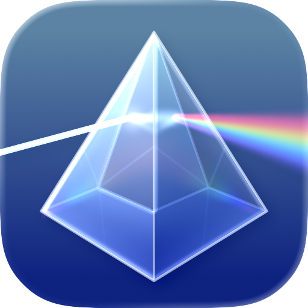

Clearly. A markdown editor and knowledge base for Mac.
Write with syntax highlighting. Link your thoughts. Search everything. Preview beautifully. Free and open source.
v2.0.0 · Requires macOS Sonoma or later.


Writing
- Syntax Highlighting
- — Headings, bold, italic, links, code blocks, tables, highlighted as you type.
- Format Shortcuts
- — ⌘B bold, ⌘I italic, ⌘K links.
- Extended Markdown
- — Highlights, superscript, subscript, emoji shortcodes, table of contents.
- Scratchpad
- — Menubar scratch pad with a global hotkey.
Knowledge
- Wiki-links
- — Link documents with
[[wiki-links]]. Type[[to autocomplete. - Backlinks
- — Linked and unlinked mentions with one-click linking.
- Tags
- — Organize with
#tags. Browse them from the sidebar. - Global Search
- — Full-text search across every document, ranked by relevance.
- Document Outline
- — Navigate headings and jump instantly.
- File Explorer
- — Browse folders, bookmark locations, create and rename files.
Preview
- GFM Rendering
- — Tables, task lists, footnotes, strikethrough.
- KaTeX Math
- — Inline and block equations.
- Mermaid Diagrams
- — Flowcharts and sequence diagrams from code blocks.
- Code Blocks
- — 27+ languages, line numbers, diff highlighting, one-click copy.
- Callouts
- — NOTE, TIP, WARNING, and 15+ foldable types.
- Interactive
- — Toggle checkboxes, zoom images, hover footnotes, double-click to source.
Integration
- AI / MCP Server
- — Expose your vault to AI agents for search and retrieval.
- QuickLook
- — Preview
.mdfiles in Finder with Space. - PDF Export
- — Export or print with page breaks handled.
- Copy Formats
- — Markdown, HTML, or rich text.